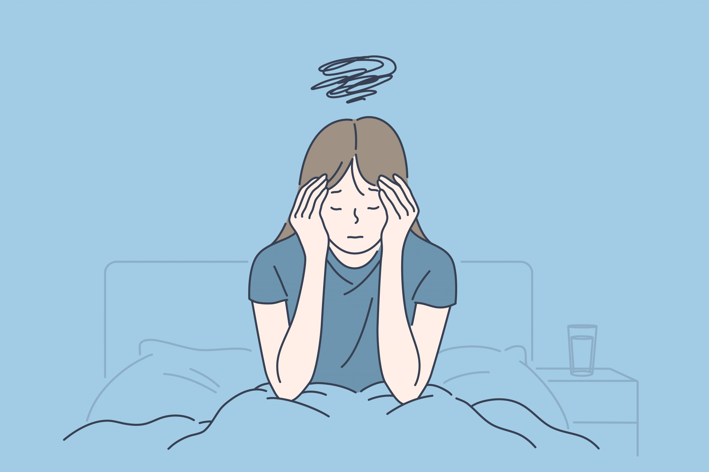

El Estrés
El estrés es un sentimiento de tensión física o emocional. Puede provenir de cualquier situación o pensamiento que lo haga sentir a uno frustrado, furioso o nervioso. El estrés es la reacción de su cuerpo a un desafío o demanda. En pequeños episodios el estrés puede ser positivo, como cuando le ayuda a evitar el peligro o cumplir con una fecha límite. Pero cuando el estrés dura mucho tiempo, puede dañar su salud.
Consideraciones
• Estrés agudo: Este es estrés a corto plazo que desaparece rápidamente. Puede sentirlo cuando presiona los frenos, pelea con su pareja o esquía en una pendiente. Esto le ayuda a controlar las situaciones peligrosas. También ocurre cuando hace algo nuevo o emocionante. Todas las personas sienten estrés agudo en algún momento u otro.
• Estrés crónico: Este es el estrés que dura por un período de tiempo prolongado. Usted puede tener estrés crónico si tiene problemas de dinero, un matrimonio infeliz o problemas en el trabajo. Cualquier tipo de estrés que continúa por semanas o meses es estrés crónico. Puede acostumbrarse tanto al estrés crónico que no se de cuenta que es un problema. Si no encuentra maneras de controlar el estrés, este podría causar problemas de salud.
EL ESTRÉS Y SU CUERPO
Su cuerpo reacciona ante el estrés al liberar hormonas. Estas hormonas hacen que su cerebro esté más alerta, causar que sus músculos se tensionen y aumentar su pulso. A corto plazo, estas reacciones son buenas porque pueden ayudarle a manejar la situación que causa el estrés. Esta es la manera en que su cuerpo se protege a sí mismo. Cuando tiene estrés crónico, su cuerpo se mantiene alerta incluso cuando no hay peligro. Con el tiempo, esto le pone en riesgo de problemas de salud, incluyendo:
- Presión arterial alta
- Insuficiencia cardíaca
- Diabetes
- Obesidad
- Depresión o ansiedad
- Problemas de la piel, como acné o eczema
- Problemas menstruales
SIGNOS DE DEMASIADO ESTRÉS
El estrés puede causar muchos tipos de síntomas físicos y emocionales. Algunas veces posiblemente no se dará cuenta de que estos síntomas son ocasionados por el estrés. Aquí hay algunos signos de que el estrés le puede estar afectando:
- Diarrea o estreñimiento
- Mala memoria
- Dolores y achaques frecuentes
- Dolores de cabeza
- Falta de energía o concentración
- Problemas sexuales
- Cuello o mandíbula rígidos
- Cansancio
- Problemas para dormir o dormir demasiado
- Malestar de estómago
- Uso de alcohol o drogas para relajarse
- Pérdida o aumento de peso